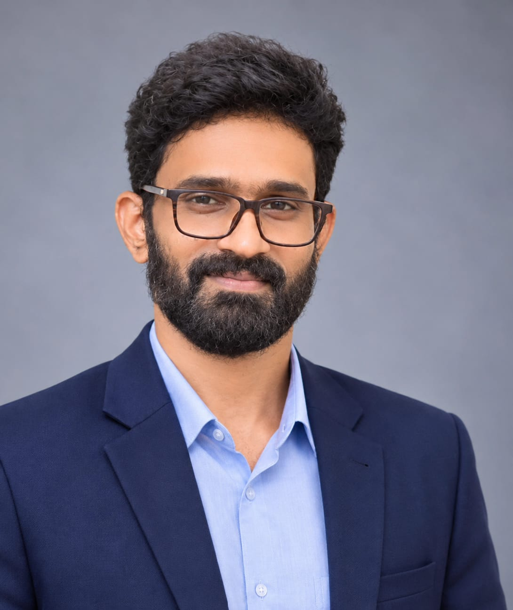

01 / THEME
Digital Platform Competitiveness
How firms develop and sustain competitive positions in platform-based markets.
I am an Assistant Professor at the School of Economics and Business, RV University, Bengaluru. My research examines digital platforms, innovation capabilities and the international competitiveness of firms, with a particular focus on firms of Indian origin.

My work sits at the intersection of strategic management, digital platforms and technology-enabled business transformation.
I am an Assistant Professor at the School of Economics and Business, RV University, Bengaluru, and a PhD candidate at the Shailesh J. Mehta School of Management, Indian Institute of Technology Bombay. Having submitted my doctoral thesis, my research examines the capabilities that enable firms of Indian origin to enhance and sustain their international competitiveness in the digital platform economy, with a particular focus on innovation platforms.
My research interests include digital platform competitiveness, innovation platforms, platform capabilities, technology and innovation management, and international strategy. I draw on a combination of academic research, professional experience in the technology and consulting sectors, and management education.
My academic engagements include a Visiting Fellowship at the University of Cambridge Judge Business School and participation in international research conferences.
I study how firms build, organise and leverage capabilities to participate in and compete through digital platforms and innovation ecosystems.
How firms develop and sustain competitive positions in platform-based markets.
Capabilities for platform integration, reconfiguration, governance and ecosystem development.
How firms from emerging economies compete and expand in international markets.
Strategic management of technological change, innovation and organisational capabilities.
Technology-enabled changes in business models, activities and competitive strategies.
Managerial implications and business applications of AI and other emerging technologies.
Research question: What capabilities can enable ICT firms of Indian origin to enhance or sustain their international competitiveness in the digital platform economy, particularly on innovation platforms?
A selection of my published research and conference contributions.
Technology Analysis & Strategic Management.
VIEW PUBLICATION ↗Published journal article.
VIEW PUBLICATION ↗Scopus-indexed conference proceeding.
VIEW RESEARCH OUTPUT ↗My teaching spans strategic management, technology and innovation, competitiveness and emerging technologies in business.
Prior to and alongside my academic career, I gained experience in technology and business-facing roles.
Experience in software development and implementation activities.
Worked on competitor analysis and export strategy-related assignments.
Experience in requirements gathering and translating requirements into test cases.
Selected academic recognition and international engagement.
University of Cambridge Judge Business School, United Kingdom · January–April 2024.
Qualified for Assistant Professorship, India.
My academic training and research experience are grounded in management and strategic analysis.
Shailesh J. Mehta School of Management, Indian Institute of Technology Bombay.
For research collaborations, academic discussions, teaching engagements and professional enquiries, please get in touch.